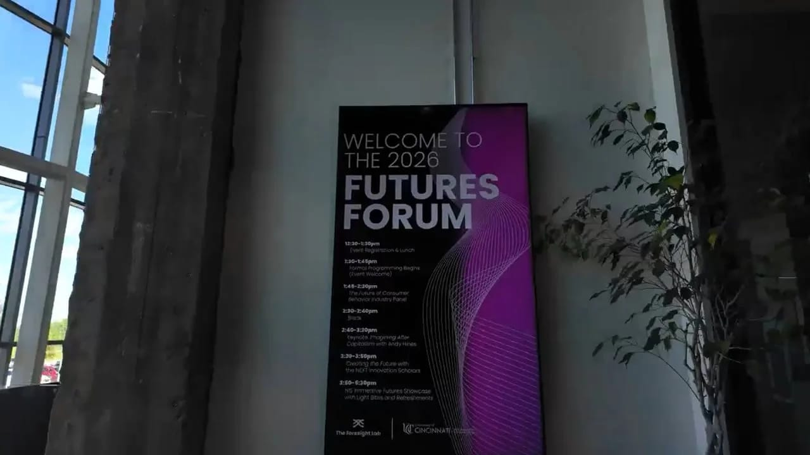
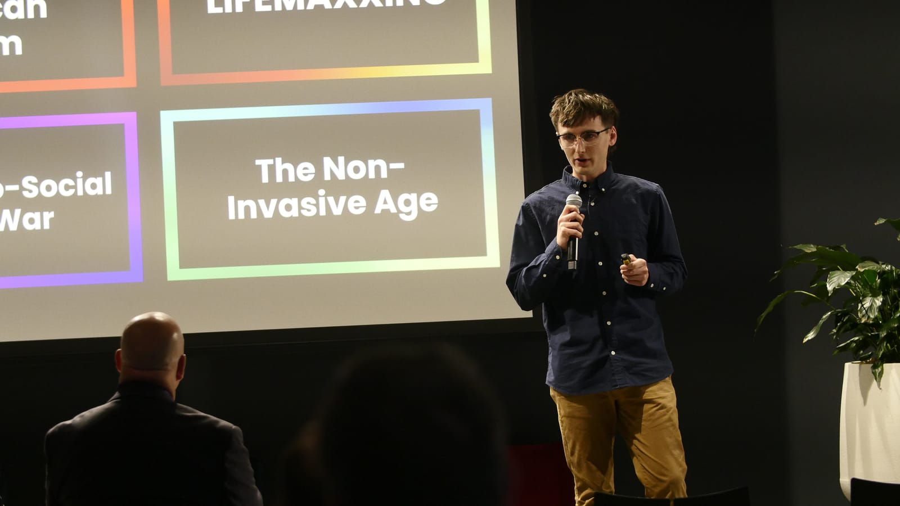
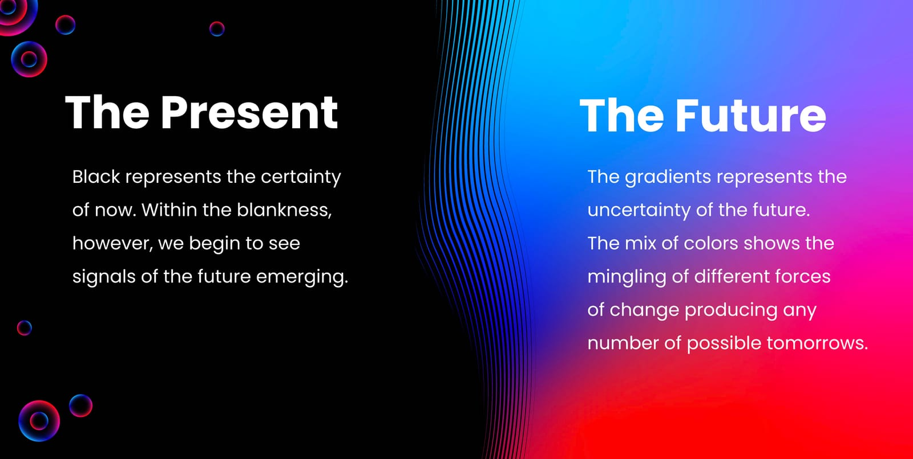
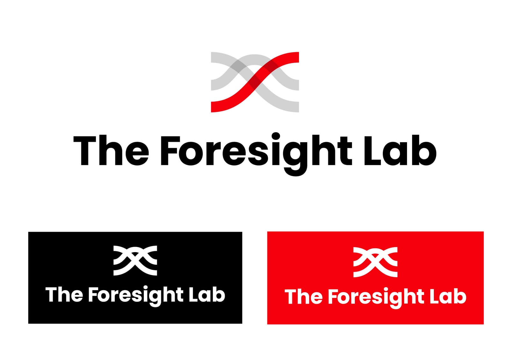
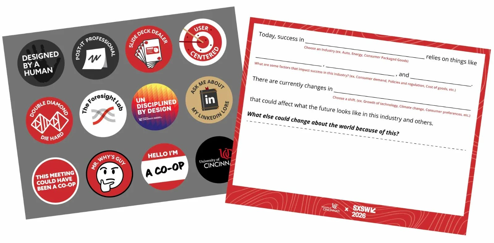
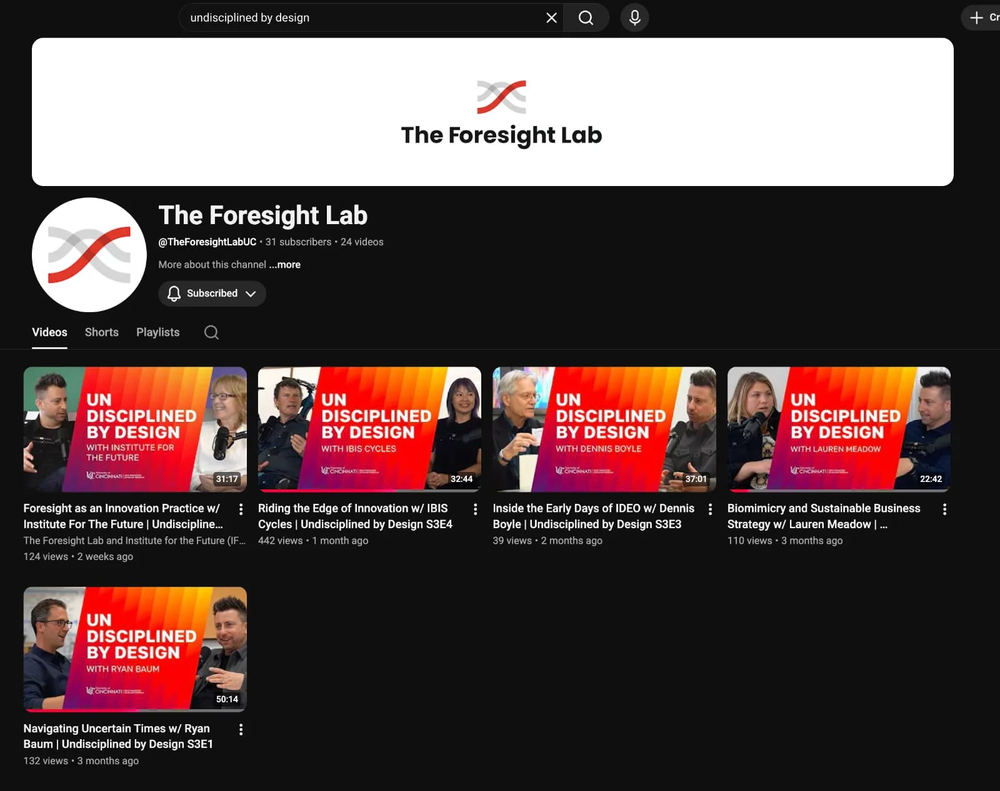
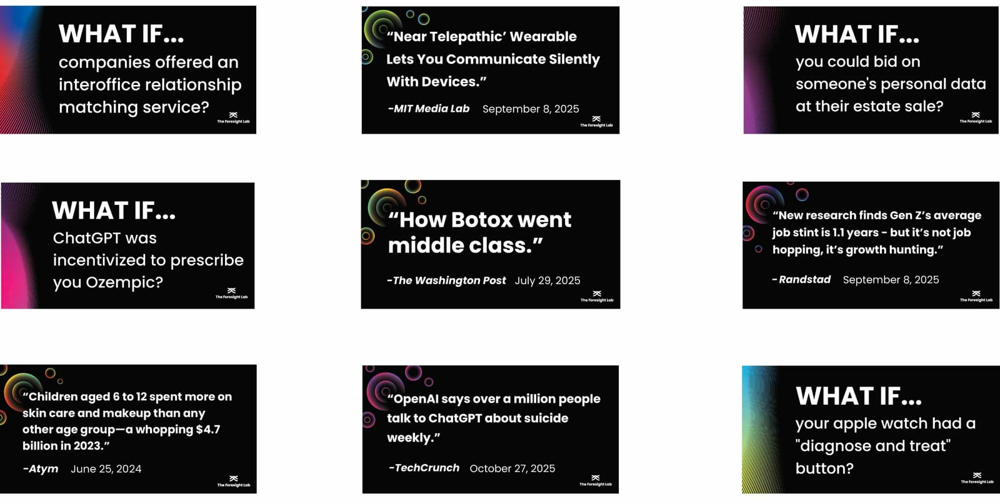

- TYPE
- Graphic Design, Experiential Design
- DATE
- Spring 2026
- TEAM CREDIT
- Kat Burke
- ROLE
- Lead designer
Designing the Experience of the 2026 Futures Forum
OVERVIEW
Nobody can predict the future. Not an analyst, not a big tech developer, not even a futurist. But what we can do is imagine the many possible ways that tomorrow can take shape in an effort to thrive in any possible future. This is the purpose of the University of Cincinnati's strategic foresight research lab, one of only three undergraduate labs across the country doing this type of work. Each year the team conducts a year's worth of research then shares that work at the Futures Forum. Last year, I designed the posters for the first ever forum, and this year I got to do it again — bigger and badder.

What is the Futures Forum
During the Futures Forum, attendees sit in on industry panels and keynote speakers (hey, there's me!). Then they step into our curated experience where they don't just learn about our research — they step into the worlds of tomorrow.

Early Digital Sketches
Early sketches explored different ways to literally represent diverging time moving between the present and many futures. Over time this was refined into the four-poster series.

But before the Futures Forum could happen, other projects had to take shape…

The Foresight Lab Logo
As the scope of our research grew beyond UC's NEXT Innovation Scholars Program, it became necessary to create a new identity — a visual shorthand for thought leadership that had extended to US Bank, Forum for the Future, and Substack.
The mark comes from the three-horizons model, a staple of any foresight curriculum. The highlighted horizon is the third: the emerging far future.

SXSW 2026
Before hosting the Futures Forum, the team traveled to SXSW 2026 to present some of our work. Together, we developed an experiential showcase where participants completed an innovation passport to be entered into a drawing. Twelve kitschy stickers were made to hand out, along with a madlib activity.

The Undisciplined by Design Podcast
While our in-person engagement is crucial, it is through online platforms that the Foresight Lab keeps a continuous stream of content. Key to that is the Undisciplined by Design podcast, which launched on YouTube this year.

The goal of our work is not to predict the future. It is to imagine day-to-day life in any number of possible futures that current trends could produce.
What are we showcasing?
Two things sit at the core: the driver descriptions on the main posters, and the artifacts — imagined pieces of design someone might encounter in daily life in the future, like this poster series for an "enhanced" Olympic games.
